Reference image not received.
Save it as docs/design/reference/xplor9-reference.png and it will appear here.
Save it as docs/design/reference/xplor9-reference.png and it will appear here.

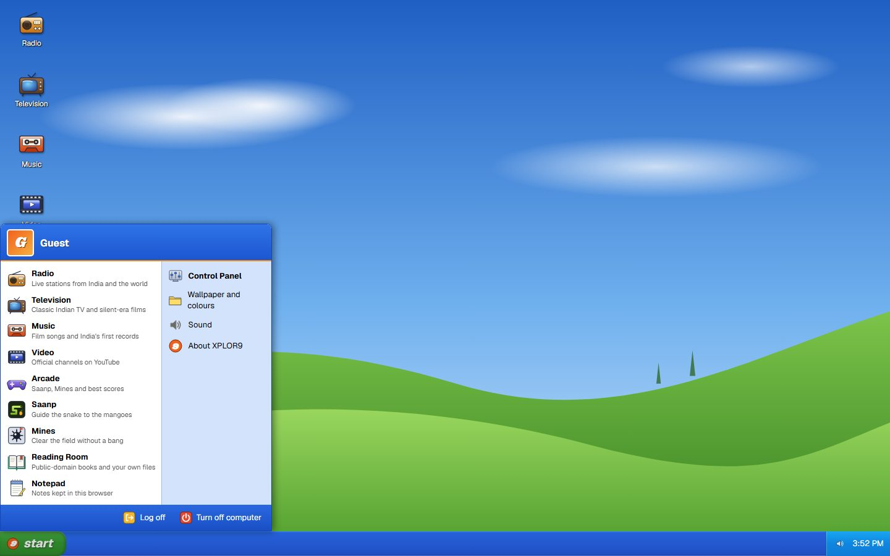
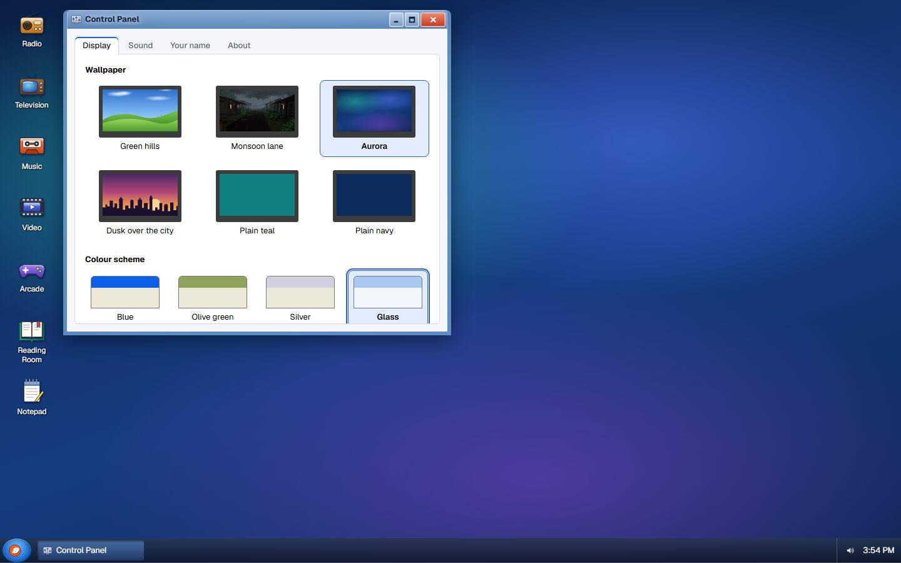
Screenshots from a production build (commit 89c70df), 1440×900 desktop and 390×844 phone. Videos and stations are real official uploads and live streams; nothing here is a mock-up.


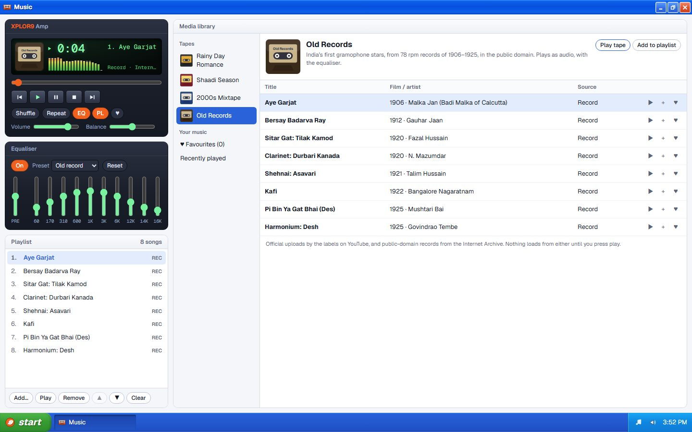
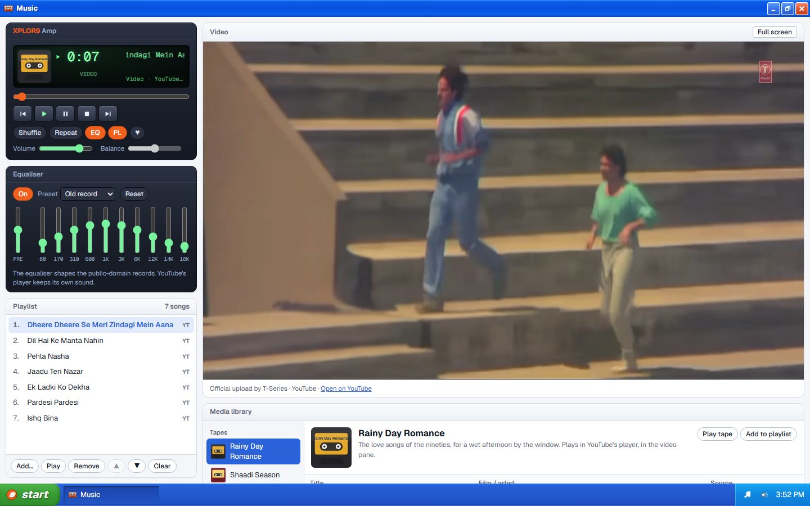
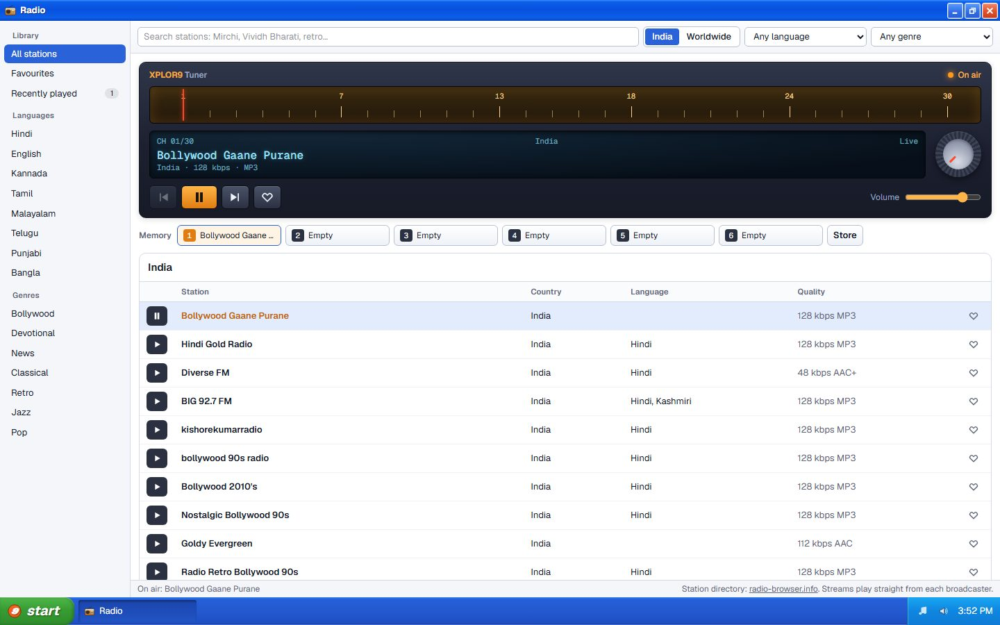
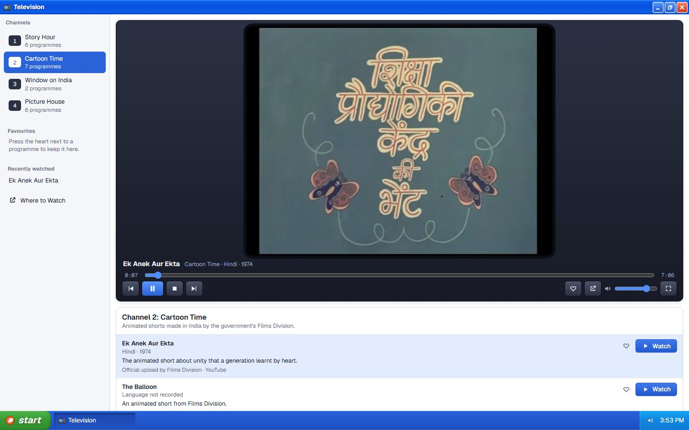
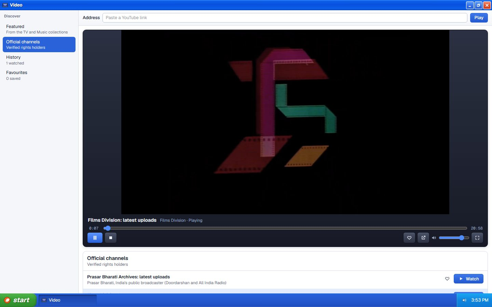
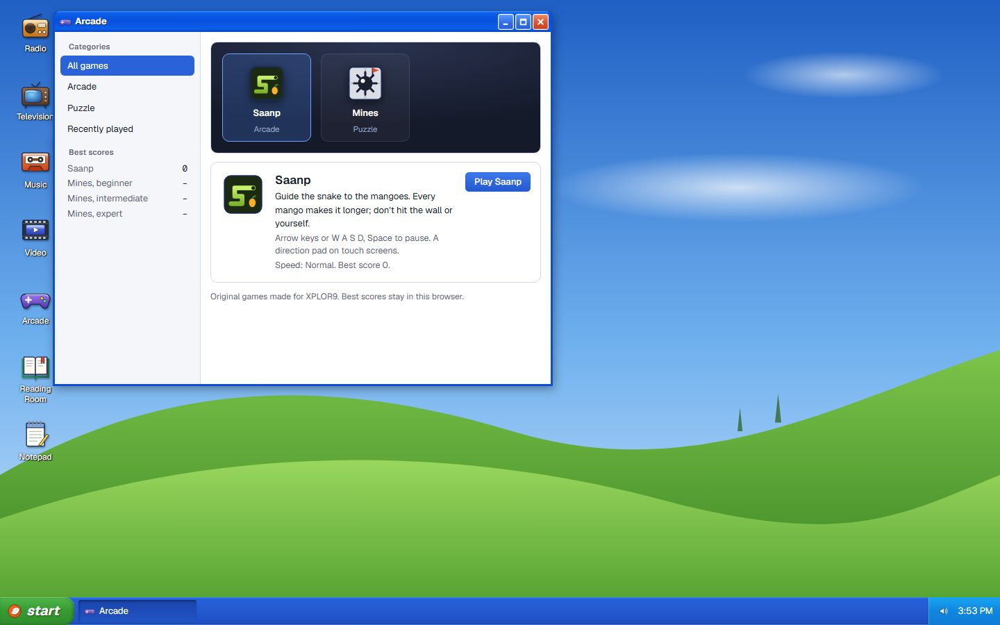
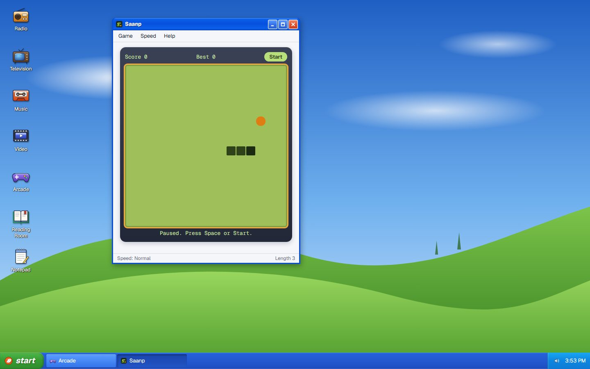
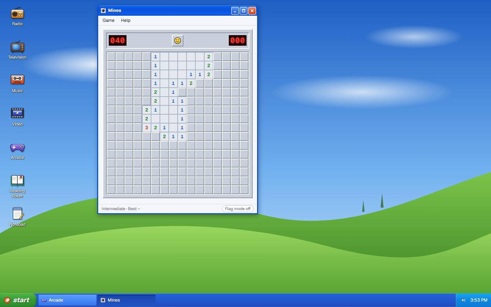
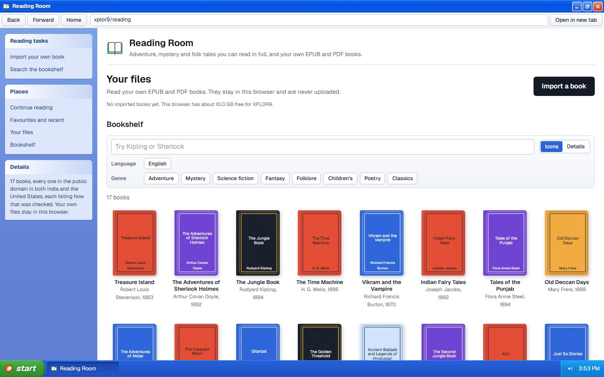
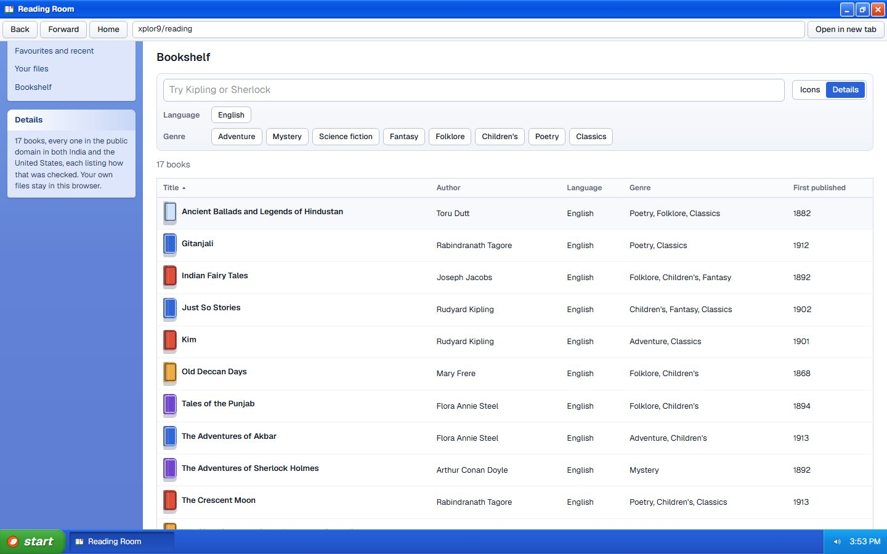
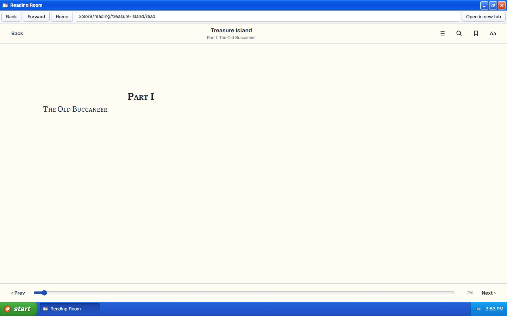
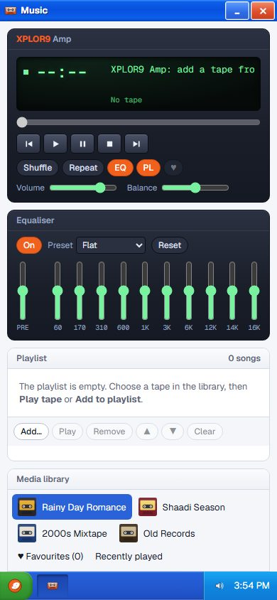
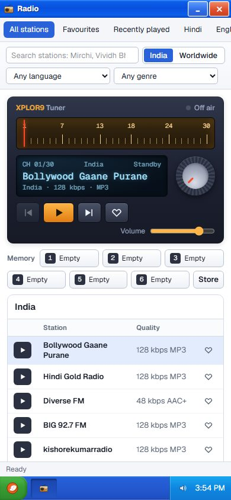
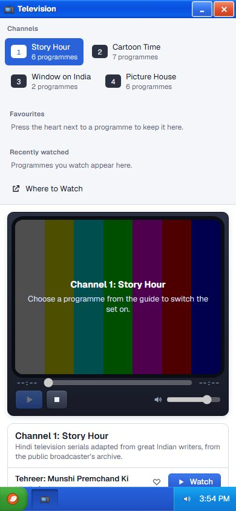
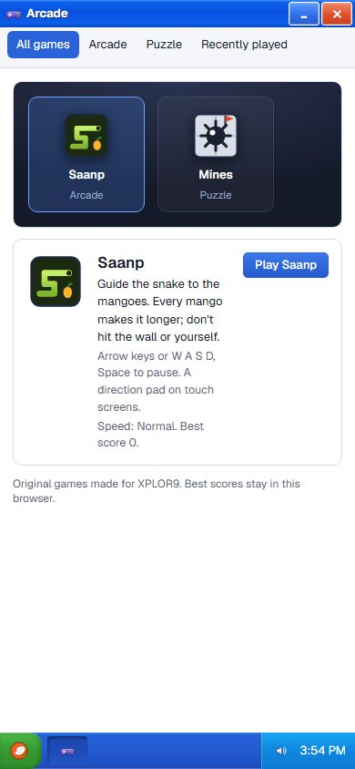